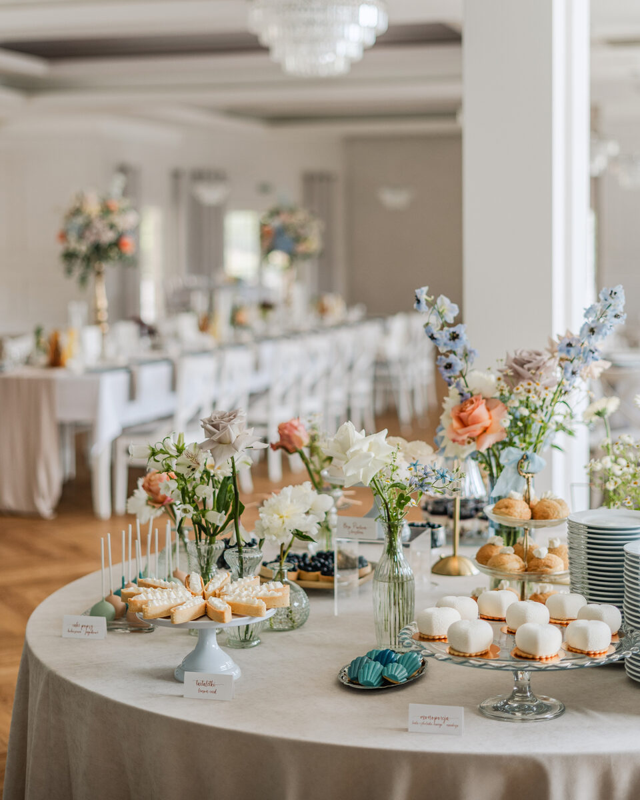
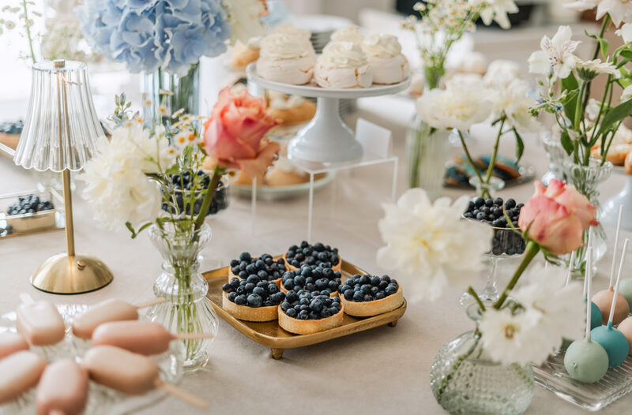

Rymanów, Krosno i okolice
Słodki stół na wesele w Krośnie i okolicach
Desery, patery i dekoracja dobrane do stylu Waszego wesela. Smaki wybieracie na degustacji, a resztą zajmuję się ja.

Co może znaleźć się na słodkim stole
-

Tartaletki
Z owocami, np. z jagodami albo malinami.
-
Pavlove
Lekkie bezy z kremem i owocami.
-
Cake popsy
Ciasto na patyczku w dekoracji dopasowanej do stołu.
-
Monoporcje
Pojedyncze porcje, które możecie wcześniej spróbować na degustacji.
Paczki dla gości: [[DO POTWIERDZENIA: czy paczki dla gości są w ofercie i w jakiej formie]]
Desery wyważone, nie przesłodzone
Nad smakiem pracuję razem z Wami na degustacji.
[[DO POTWIERDZENIA: aktualna lista smaków i sezonowość]]
Stół, który pasuje do sali
Słodki stół układam z paterami, standami, misami i dekoracjami dobranymi do stylu wesela i wystroju sali. Razem wybieramy klimat, na przykład vintage ze srebrnymi paterami albo nowoczesną, elegancką aranżację.
-
[[DO UZUPEŁNIENIA: nazwa stylu przy każdym zdjęciu, np. vintage, nowoczesny]] -
[[DO UZUPEŁNIENIA: nazwa stylu przy każdym zdjęciu, np. vintage, nowoczesny]] -
[[DO UZUPEŁNIENIA: nazwa stylu przy każdym zdjęciu, np. vintage, nowoczesny]] -
[[DO UZUPEŁNIENIA: nazwa stylu przy każdym zdjęciu, np. vintage, nowoczesny]]
Jak wygląda współpraca
-
01
Rozmowa
Piszecie lub dzwonicie z datą, miejscem i liczbą gości. Pytam o styl wesela, proponuję smaki i kolorystykę. Najlepiej odezwać się [[DO POTWIERDZENIA: ile miesięcy przed weselem]].
-
02
Degustacja
Próbujecie monoporcji i tortów i wybieracie smaki. [[DO POTWIERDZENIA: czy płatna, kiedy się odbywa]]
-
03
Projekt
Ustalamy wygląd stołu. Dobieram patery, standy i dekoracje do stylu wesela.
-
04
Dostawa
Dowożę i układam stół na sali. [[DO POTWIERDZENIA: zasięg i koszt dowozu]]
Co piszą pary po weselu
4,9 w Google (36 opinii) · 58 rekomendacji na Facebooku
-
„Słodki stół był jedyną rzeczą, która nie stresowała mnie przed weselem.”
Google -
„Smak – po prostu obłędny, nie za słodki, idealnie wyważony.”
Google -
„Po degustacji byliśmy spokojni, że nie musimy się stresować słodkościami na nasze wesele.”
Google
Od czego zależy cena
Wycena zależy od liczby gości, liczby i rodzaju deserów oraz aranżacji stołu. Po wiadomości z datą, miejscem i liczbą gości przygotuję wycenę.
[[DO POTWIERDZENIA: orientacyjna cena "od X zł" lub kwota za osobę, jeśli Gosia chce ją podać]]
Najczęstsze pytania
Ile deserów przypada na osobę?
[[DO POTWIERDZENIA]]
Kiedy najlepiej zarezerwować termin?
[[DO POTWIERDZENIA]]
Czy degustacja jest płatna i jak wygląda?
Możecie spróbować monoporcji i tortów. [[DO POTWIERDZENIA: płatność, termin, liczba osób]]
Czy dowozisz i ustawiasz stół na sali?
Tak, dowożę i układam stół na miejscu. [[DO POTWIERDZENIA: zasięg i koszt]]
Czy są desery wegańskie, bezglutenowe lub z uwzględnieniem alergii?
[[DO POTWIERDZENIA]]
Czy zrobisz też tort weselny?
Tak, tort i słodki stół mogą tworzyć spójną całość. Zobacz tort weselny.
Kontakt
Zapytajcie o termin
Napiszcie, kiedy i gdzie odbędzie się wesele, ile będzie gości i w jakim stylu. Odpowiem z propozycją i terminem degustacji.
- Telefon
- +48 722 792 459
- slodkiestudio@gmail.com